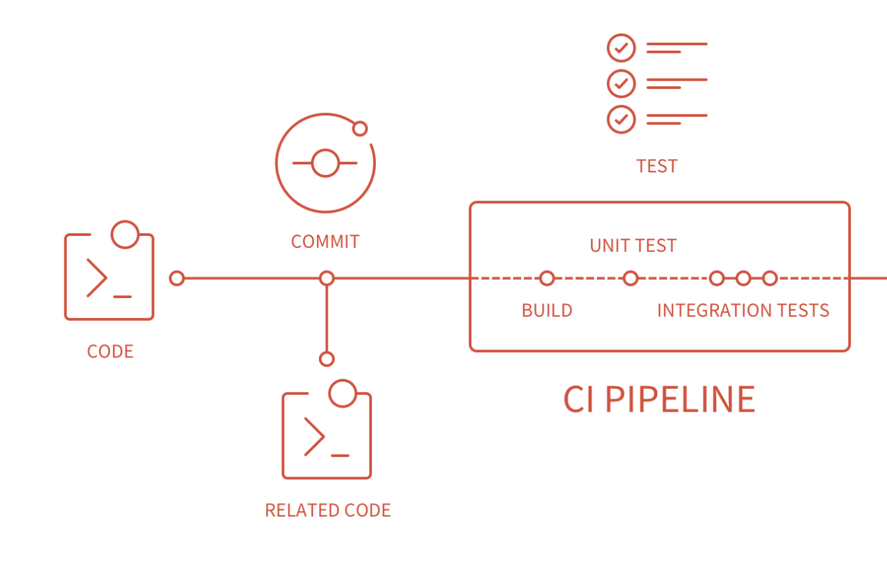

Continuous Integration#
In the prior sessions, we explored and tried quite a few things, from formatting and linting to running various tests. As mentioned before, you should adhere to this principles and utilize the respective resources continuously and whenever you work on your code/analyses. However, this can of course become cumbersome with more complex code. So, ideally we could automate the continuous checks and quality control. But how?
Continuous integration (CI), is basically that: run the tests you wrote previously automatically. In a wider sense, CI is the practice of integrating changes to a project made by individuals into a main, shared version frequently (usually multiple times per day). This is, because if you work collaboratively on GitHub (or GitLab) you probably work on your own branch or on a feature branch but eventually all work comes together in the main branch. The main branch is also the branch on which the “software package” or code/analyses in the end will be built and/or distributed from. So it is very important that everything coming together to the main branch is clean and tested.
CI software is also typically used to identify any conflicts and bugs that are introduced by changes, so they are found and fixed early, minimizing the effort required to do so. Running CI regularly also saves humans from needing to do it manually.

CI on GitHub#
GitHub is only one provider of many which let’s you automate your tests whenever you push a new version to the remote repository. As GitHub is a collaborative code platform, it will do this for every developer when they push to the main branch by default (except if changed respectively). However, you can also use CI to test different branches.
GitHub actions#
GitHub Actions is a continuous integration and continuous deployment (CI/CD) service. It allows to automate workflows for building, testing, and deploying code directly from GitHub repositories. With GitHub Actions, you can create workflows that run automatically on events like pushes, pull requests, or scheduled times.
Key concepts and aspects#
Workflow: AYAMLfile that defines automated processes (likeCI/CD) for yourproject.Workflowsare stored in the.github/workflows/directory within yourrepository. Eachworkflowcan have multiplejobsandsteps.Job: A set of steps that run on the samevirtual machine(orrunner).Jobsare executed in parallel by default but can also depend on each other. For example, aCI workflowmight have separatejobsforlinting,testing, anddeployment.Step: A singletaskwithin ajob. Eachstepcanrun commands,install dependencies,set up environments, or useactions(predefined reusable commands).Runner: Avirtual machinehosted byGitHub(or self-hosted by you) that runs thejobs.GitHub-hostedrunnerscome pre-configured with differentoperating systemsand tools.Events:Trigger pointsthat start aworkflow. Commoneventsinclude:push: Runs theworkflowwhencodeispushedto a specifiedbranch.pull_request: Runs theworkflowwhen apull requestis created or updated.schedule: Runs theworkflowat specifiedintervals, like a cron job.
Actions: Predefined or customscriptsthat performtaskswithin astep.GitHubprovides manyactions(likecheckoutforcloningtherepository) that you can reuse in yourworkflows.
Building workflows#
That all sounds a bit abstract, doesn’t it? So let’s see how these things work in action and create workflows for the things we did so far: formatting and testing.
Importantly, we will create and store these workflows in the example repository we created at the end of the code formatting session. Thus, please be aware of and pay attention to the paths.
At first, we need to create the above mentioned directory for our workflows. (NB: Please make sure to adapt the path to the repository based on your machine).
import os
os.makedirs("../../../../clean_reproducible_code_nm_example/.github/workflows")
With the directory ready, we can start building our workflows.
Formatting and linting#
We will start with creating a workflow that automatically conducts the formatting and linting checks we conducted in the code formatting session.
Specifically, we want to run autopep8 to fix formatting problems and then use flake8 to check for any problems.
Here’s how that workflow file would look like:
%%writefile ../../../../clean_reproducible_code_nm_example/.github/workflows/formatting.yml
# The name of the workflow
name: CI Formatting
# The events/triggers when it should be run
# Here we set that the workflow should run
# whenever there was a push or PR to the
# main branch
on:
push:
branches: [main]
pull_request:
branches: [main]
# We define the jobs that should be run
# and the respective runner, ie virtual machine
# Here, the workflow runs on the latest ubuntu
jobs:
code-formatting-linting:
runs-on: ubuntu-latest
# Below we define all steps that should be
# run within the workflow
steps:
# Step 1: Checkout the repository
- name: Checkout code
uses: actions/checkout@v2
# Step 2: Set up Python environment
- name: Set up Python
uses: actions/setup-python@v2
with:
python-version: '3.10.6' # Use the Python version compatible with your project
# Step 3: Install dependencies
- name: Install dependencies
run: |
python -m pip install --upgrade pip
pip install -r requirements.txt
# Step 4: Run autopep8 for code formatting
- name: Format code with autopep8
run: autopep8 --in-place --recursive .
# Step 5: Run linting with flake8
- name: Lint code with flake8
run: flake8 .
Overwriting ../../../../clean_reproducible_code_nm_example/.github/workflows/formatting.yml
While that’s already it for our formatting and linting workflow file, we need to address one thing before we can run it.
Defining the computational environment#
As mentioned before and as you can see above, we need to define a computational environment the workflow should run in and thus, the code/analyses should be tested in. This should to some extent mimic your local setup but you should of course also think about some parameterization, ie using different versions of python and the respective packages you’re using.
That being said, we need to set the desired python version, as well as all modules/packages needed to run the workflow. To keep this simple, you should start with the python version you’re using locally for the code/analyses and utilize a little requirements.txt file within which you keep track of the required modules/packages and their specific versions.
While we already set the python version to 3.10.6, the version, we used to create this workshop, you should always be aware of the version you’re using.
Regarding the requirements.txt, we can create and populate it like so:
(NB: Please remember to change the path respectively.)
%%writefile ../../../../clean_reproducible_code_nm_example/requirements.txt
flake8
black
autopep8
numpy
torch
scikit-learn
matplotlib
seaborn
pytest
Writing ../../../../clean_reproducible_code_nm_example/requirements.txt
Now, we need to add both to our repository, commit the changes and push the files to GitHub.
git add requirements.txt
git commit -m "add requirements.txt"
git add .github/workflows/formatting.yml
git commit -m "add formatting workflow"
git push
If everything worked out, you should see both files in your GitHub repository.

Not only that: our formatting workflow actually already ran (as we pushed to the main branch, ie the workflow trigger). However, it failed as indicated by the small red x. While this can seem frightening and stressful, it’s actually very helpful, as we immediately know that we need to address some problems without having to evaluate things locally (you still should do that of course).
If you want to know what went wrong, ie what the problem is, you can click on the small little x and then on details to see what caused the issue.
What you will then see is a very comprehensive output log of all the things that happened when our workflow ran, ie all the steps and respective commands.

Based on that, it’s clear that the linting with flake8 step failed, ie parts of our code is not formatted correctly. By clicking on this step, we will get the respective outputs, similar to what we would we locally.

While there are a lot of errors, the cool thing is that we see our previous work on code formatting in action: only new files, ie the ones we created and added after our code formatting session have errors, as we didn’t check their formatting until now via the the automated workflow.
Testing#
Comparably, we can set up a workflow to run the test whenever there’s a push and/or PR to the main branch.
At first, we need to create a respective file:
%%writefile ../../../../clean_reproducible_code_nm_example/.github/workflows/testing.yml
# The name of the workflow
name: CI Testing
# The events/triggers when it should be run
# Here we set that the workflow should run
# whenever there was a push or PR to the
# main branch
on:
push:
branches: [main]
pull_request:
branches: [main]
# We define the jobs that should be run
# and the respective runner, ie virtual machine
# Here, the workflow runs on the latest ubuntu
jobs:
code-testing:
runs-on: ubuntu-latest
# Below we define all steps that should be
# run within the workflow
steps:
# Step 1: Checkout the repository
- name: Checkout code
uses: actions/checkout@v2
# Step 2: Set up Python environment
- name: Set up Python
uses: actions/setup-python@v2
with:
python-version: '3.10.6' # Use the Python version compatible with your project
# Step 3: Install dependencies
- name: Install dependencies
run: |
python -m pip install --upgrade pip
pip install -r requirements.txt
# Step 4: Run tests with pytest
- name: Run tests with pytest
run: pytest tests/
Overwriting ../../../../clean_reproducible_code_nm_example/.github/workflows/testing.yml
and copy our pytest.init file over (NB: Please remember to adapt the paths based on your machine):
cp pytest.ini ../../../../clean_reproducible_code_nm_example/
Finally, we can add, commit and push everything:
git add pytest.ini
git commit -m "add pytest.ini"
git push
git add .github/workflows/formatting.yml
git commit -m "add testing workflow"
git push
That’s it, as the computational environment is the same as for the formatting and linting.
The testing workflow should now be in your GitHub repository and already running.

In more detail, you should now see both workflows and their respective outcome, which makes it easy to navigate and address potential problems.

However, our testing workflow appears to pass and thus the tests verify the expected outcomes of our code/analyses.

General considerations#
There are two important things to consider when implementing tests and workflows, ie CI like this: computational environments and workflow complexity.
Computational environments#
While we used the same computational environment for writing the code/analyses and testing, it’s generally recommended to have separate computational environments for this to keep the development clean and straightforward, as e.g. not everything that’s required for testing is needed to run the code/analyses.
Workflow complexity#
Believe it or not: our example is somewhat simple as we have everything in one file and don’t have dependencies across files, etc. . Thus, implementing the respective workflows was rather “easy”. We could have put everything, ie the formatting/linting and testing in one longer workflow but we recommend to keep different workflows for different purposes. The specific implementation depends completely on your code/analyses/project.
Conclusion:#
Task for y’all!
You have 40 min.